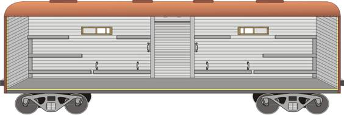

ПОДГОТОВКА ЖЕЛЕЗНОДОРОЖНОГО ПОДВИЖНОГО СОСТАВА
1. Детали съемного воинского оборудования крытых вагонов
1 – доска; 2 – ружейная зубчатка; 3 – печь; 4 – печной и кухонный комплекты (а) дымовые трубы; б) ящик для топлива; в) кочерга; г) кухонный переходной конус; д) совок; е) лист для заделки люка; ж) поддонный лист;); 5 – рамы оконные с полозками; 6 – стремянка; 7 – ведро пожарное; 8 – фонарь; 9 – лестница деревянная; 10 – метла.
2. Нормы съемного воинского оборудования

3. Размещение деталей несъемного воинского оборудования в вагонах.

Рис. Оборудование крытых вагонов несъемным воинским оборудованием

4. Оборудование крытых грузовых вагонов под людские перевозки
4.1 Общие положения
Подготовка подвижного состава для перевозки воинского эшелона выполняется железной дорогой и включает следующие операции:
— осмотр и отбор вагонов, удовлетворяющих требованиям Правил технической эксплуатации железных дорог;
— очистку вагонов от мусора, снега, льда, остатков ранее перевозившихся грузов, крепежных материалов, а также удаление посторонних надписей и рисунков;
— промывку горячей водой и дезинфекцию людских вагонов, вагонов-изоляторов, вагонов-кухонь и вагонов – продскладов, их просушку, установку съемного воинского оборудования;
— полное или частичное закрытие и закрепление верхних загрузочных люков в людских вагонах, вагонах-изоляторах, вагонах-кухнях и вагонах – продскладах.
При повторной погрузке, если это необходимо, людские вагоны, вагоны-изоляторы, вагоны-кухни и вагоны – продсклады, кроме того, промываются горячей водой.
4.2 Оборудование крытых вагонов для перевозки личного состава
При оборудовании крытых грузовых вагонов под людские перевозки устройство нар для ночного следования производится следующим порядком:
доски у лобовых стенок в каждой половине вагона укладываются поперек вагона на настенные доски в три яруса в количестве:
— на каждой нижней наре – 10 досок;
— на каждой средней наре – 9 досок;
— на каждой верхней наре – 8 досок.
На верхние настенные доски, находящиеся между дверными стойками и оконной рамой укладывается в каждой половине вагона по одной наре из 9 досок, их них одна доска, поставленная со стороны оконной рамы на ребро, служит для изголовья.
Подъем на средние и верхние нары, расположенные у торцовых стенок, производится по крайним доскам нижних нар. Для подъема на верхние нары в средней части вагона в гнезда у дверных стоек закладывается опорная доска, к которой приставляется лестница.
Ружейные зубчатки устанавливаются на специальных кронштейнах в боковых стенах вагона около дверных проемов и закладываются каждая одной доской.
Печи в вагонах устанавливаются так, чтобы расстояние между стенками вагона, крайней доской нары и печью было не менее 1000мм. Место установки печи на полу изолируется кровельной сталью по асбестовому листу толщиной 10мм. Изоляция пола должна выходить за габариты печи перед топочным отверстием на 500мм.
Дымовытяжные трубы устанавливаются в зависимости от типа вагона звеньями из 4 или 4,5 частей путем соединения одна в другую по ходу дыма и выводятся в люк вагона или через постоянные типовые разделки в крыше вагона и оканчиваются колпаками на крыше вагона.
Рамы в вагоне устанавливаются и прикрепляются к люкам вагонов на полозках. В вагоны, не оборудованные выдвижными лестницами для посадки и высадки перевозимых людей, выдаются стремянки. Фонари, применяемые для внутреннего освещения вагонов, навешиваются на крюки на стенах вагонов над дверью и по бокам в каждой стороне.
Рис. Оборудование крытых вагонов для перевозки личного состава съемным воинским оборудованием (зимний вариант)

4.3 Оборудование крытых вагонов под перевозку кухонь полевых
Крытые вагоны под кухни полевые предоставляются при продолжительности перевозки воинского эшелона более одних суток. Если масса продовольствия воинского эшелона не превышает 2 т, то отдельный вагон не предоставляется; продовольствие в этом случае перевозится в вагоне-кухне или других вагонах.
Печи в вагонах устанавливаются так, чтобы расстояние между стенками вагона, крайней доской нары и печью было не менее 1000мм. Место установки печи на полу изолируется кровельной сталью по асбестовому листу толщиной 10мм. Изоляция пола должна выходить за габариты печи перед топочным отверстием на 500мм.
Дымовытяжные трубы устанавливаются в зависимости от типа вагона звеньями из 4 или 4,5 частей путем соединения одна в другую по ходу дыма и выводятся в люк вагона или через постоянные типовые разделки в крыше вагона и оканчиваются колпаками на крыше вагона.
Рамы в вагоне устанавливаются и прикрепляются к люкам вагонов на полозках. В вагоны, не оборудованные выдвижными лестницами для посадки и высадки перевозимых людей, выдаются стремянки. Фонари, применяемые для внутреннего освещения вагонов, навешиваются на крюки на стенах вагонов над дверью и по бокам в каждой стороне.

Рис. Оборудование крытых вагонов под перевозку кухонь полевых съемным воинским оборудованием

4.4 Оборудование крытых вагонов под вагон-изолятор
При продолжительности перевозки воинского эшелона железнодорожным транспортом более трех суток, а также при наличии в нем 10 и более людских вагонов в состав поезда включается вагон-изолятор, который обеспечивается съемным воинским оборудованием.
При продолжительности перевозки железнодорожным транспортом менее трех суток и при наличии в поезде менее 10 людских вагонов распоряжением начальника эшелона в пассажирском вагоне может выделяться купе-изолятор.
Печи в вагонах устанавливаются так, чтобы расстояние между стенками вагона, крайней доской нары и печью было не менее 1000мм. Место установки печи на полу изолируется кровельной сталью по асбестовому листу толщиной 10мм. Изоляция пола должна выходить за габариты печи перед топочным отверстием на 500мм.
Дымовытяжные трубы устанавливаются в зависимости от типа вагона звеньями из 4 или 4,5 частей путем соединения одна в другую по ходу дыма и выводятся в люк вагона или через постоянные типовые разделки в крыше вагона и оканчиваются колпаками на крыше вагона.
Рамы в вагоне устанавливаются и прикрепляются к люкам вагонов на полозках. В вагоны, не оборудованные выдвижными лестницами для посадки и высадки перевозимых людей, выдаются стремянки. Фонари, применяемые для внутреннего освещения вагонов, навешиваются на крюки на стенах вагонов над дверью и по бокам в каждой стороне.

Рис. Оборудование крытых вагонов под вагон-изолятор съемным воинским оборудованием